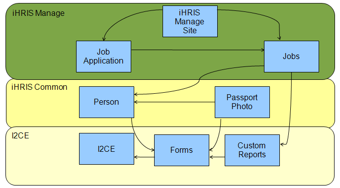
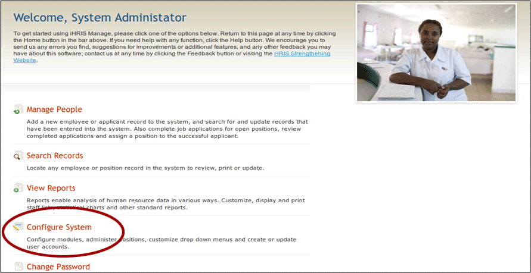
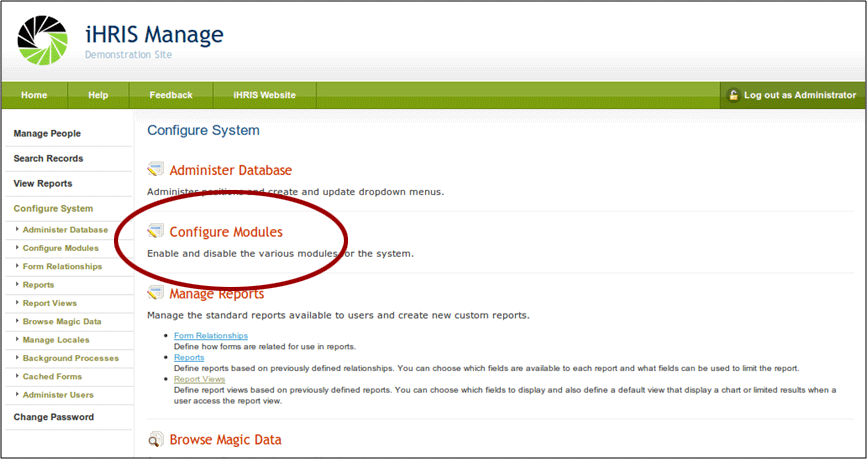
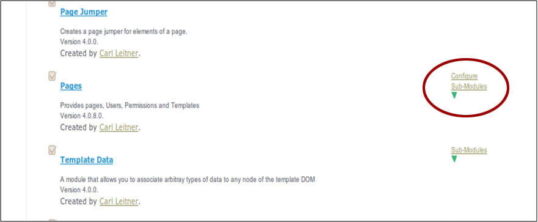
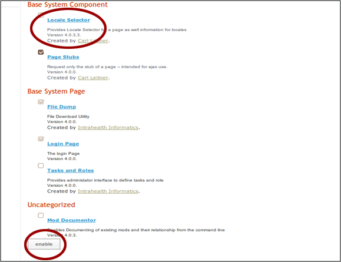
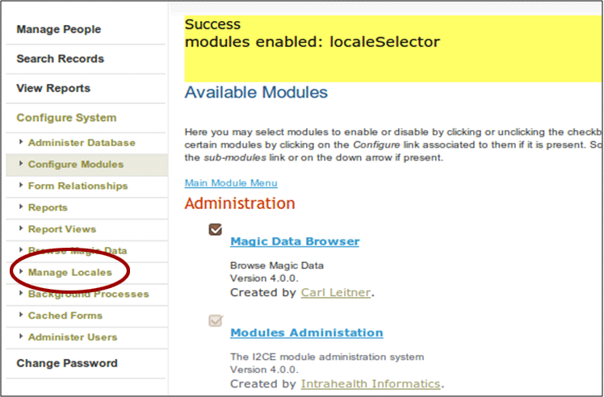
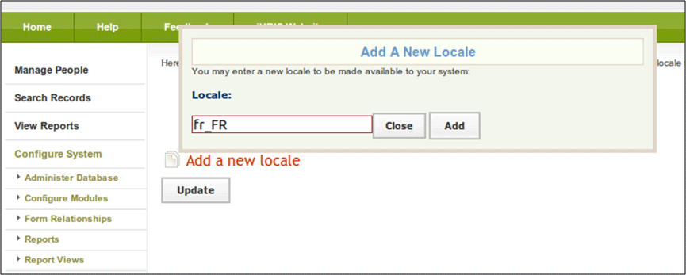
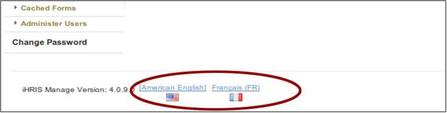

iHRIS Modules
iHRIS Administrator - Level I, © IntraHealth International, CC BY 4.0. Originally offered at hrhresourcecenter.org/elearning (CapacityPlus). Licence stated by its author, the folio owner, 2026-10-09.
1. iHRIS Modules
This module covers:
- iHRIS modules
- module dependencies
- how to enable and configure modules
2. iHRIS Modules
The iHRIS suite of software is built from a series of modules.
Each module provides a specific functionality to the iHRIS system.
A module is defined in XML by its configuration file.
A module is a collection of:
- code: such as JavaScript, PHP, SQL
- web content: such as images or .html files
- configuration data: defined in its configuration file
3. Example Modules
Forms: handles the logic of collecting, storing, displaying, and editing structured data within the system
Person: defines the person form containing the information collected about a person such as the given name, surname, and date of birth
Custom Reports: allows the creation of reports based on the data forms in the system
Custom Reports - PDF: enables the creation of PDF versions of the Custom Reports
Intrahealth Informatics Core Engine (I2CE): main module of the system on which all modules are built
iHRIS Manage Blank Site: each iHRIS Site is its own module—such as the blank site on the iHRIS install
4. Modules and Dependencies
All modules depend on each other.

5. Enabling Modules
Module dependencies are defined by the module's configuration .xml file. Required modules cannot be disabled.
Some modules are optional and can be enabled two different ways:
- editing the site's modules configuration file to enable
- using the Module Configuration Web Interface
6. iHRIS and Translations
The iHRIS software has been translated into:
- Swahili
- French
- Italian
- Portugese
- Estonian
iHRIS handles translations of the software through the concept of "Locales".
7. Locales
A Locale is a pair of terms made of language and country.
Locales are labelled in the form xx_YY:
- xx is a two letter language code
- YY is a two letter country code
Examples:
- en_US is English in the United States
- en_GB is English in Great Brittan
- fr_FR is French in France
8. Enable Optional Modules
The following instructions illustrate how to enable optional modules using the example of the "Locale Selector" module.
Login as system administrator:
- username: i2ce_admin
- password: the mysql password you set on install
9. Configure System
From the welcome page, select "Configure System".

10. Configure Modules
Click "Configure Modules".

11. Select Submodules of Pages
The Locale Selector is a submodule of the "Pages" module.
Scroll down until you see the "Pages" sub-modules.

12. Enable the Module
Check the "Locale Selector" module.
Click "Enable".

13. Manage Locales
The "Manage Locales" functionality is now enabled.

14. Add a New Locale
The System Administrator can make different Locales available to the end user.

15. Select Language
Now users can select a preferred language at the bottom of any page.

Source
Lesson in Section 2 of iHRIS Administrator - Level I, Moodle course module cm-50; library/ihris-admin-course/modules/cm-50.md.